Building Molecule-Surface Interactions#
Beyond building a crystal surface, new features in Avogadro make it easy to consider molecule-surface interactions. The lesson picks up at the end of the “Building a Crystal Surface” lesson.
Start with a generated Crystal Surface#
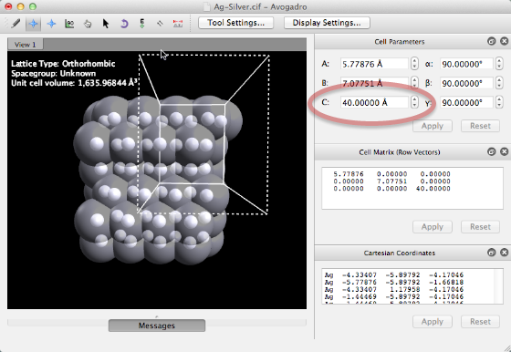
Generate the desired crystal surface. Avogadro will center the surface cell, aligned in the XY plane, with slab atoms defined below Z = 0. The Slab Builder also leaves a large space along the z-axis to allow insertion of molecules for surface interaction calculations. You can control this padding as indicated above.
New Window: Create our Molecule#
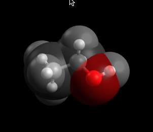
In a new window, draw the desired molecule, or open a file. Here we consider ethanol.
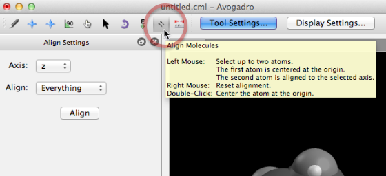
We will use the “Align Tool” to allow us to rotate and align the molecule with the OH group at the origin, and the molecule aligned along the z-axis.
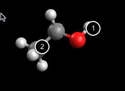
We will click on the terminal H atom (which will be translated to the origin) followed by the carbon atom (which will define the z-axis of the molecule).
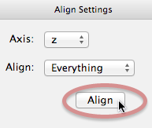
After defining the atoms (they will show colored spheres and numbers once selected), click on the “Align” button to translate and rotate the molecule.
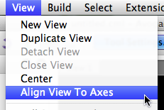
You may wish to alter the current camera view. Choosing View > Align View to Axes will reset the view to project the z-axis of the molecule to point towards you.
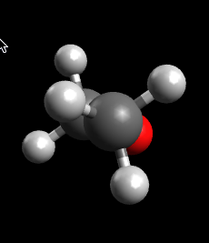
Perfect! Now we can copy our ethanol to the surface document.
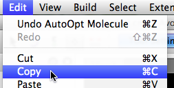
After copying, we can switch to our surface.
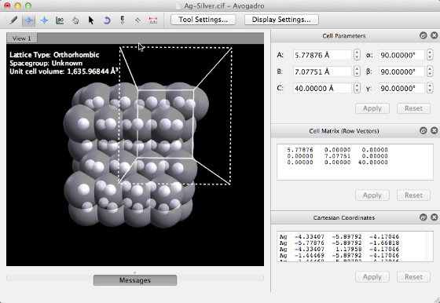
Now we’ll paste in the ethanol molecule.
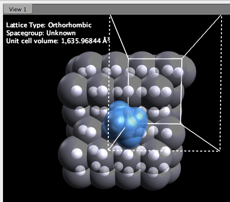
Note that the ethanol is now embedded in the surface, centered as desired. The Manipulate tool has been selected, allow us to translate the molecule as needed.
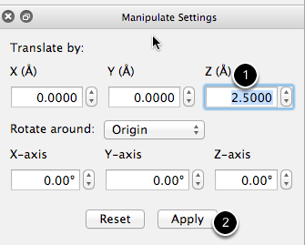
New in version 1.1 is an option to specify the exact amount to translate or rotate the selection (i.e., the molecule we just pasted). Here, we’ve specified that we want to move the molecule +2.5Å along the z-axis, above the surface, and then we click “Apply” to complete. We could also rotate around the z-axis if the positioning isn’t as desired.
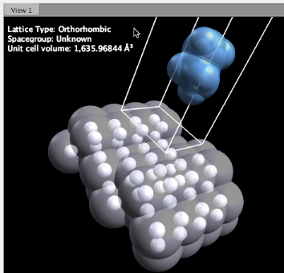
Here we have translated the ethanol 2.5 Å above the Ag surface and are ready to submit for a calculation.